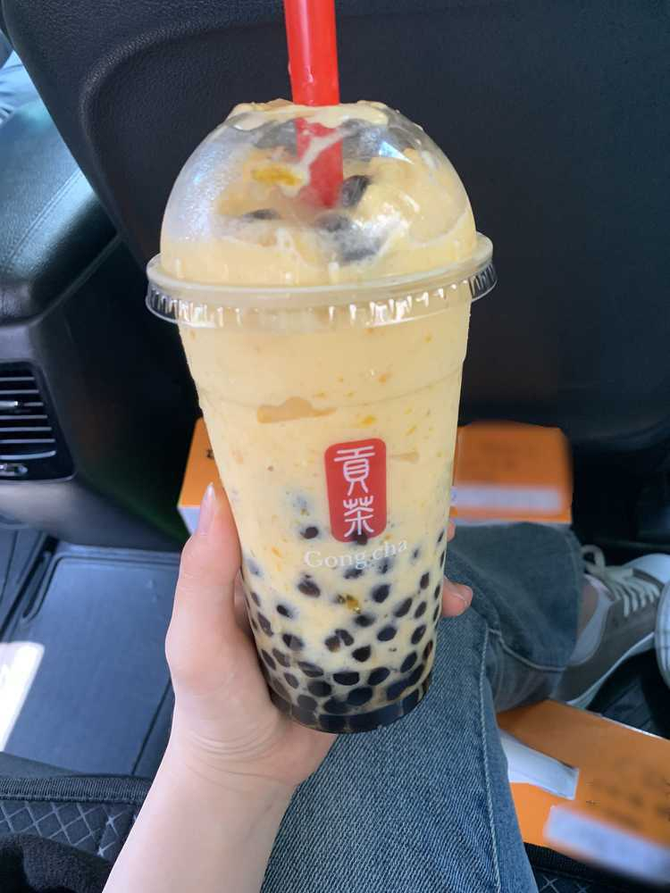

얼마만이야..
공복에 시원하게 스무디로 배를 채워볼까 했어요!
평소대로 망고스무디에 펄 2번 추가했는데
음료를 받아보니 점보사이즈였어요ㅋㅋㅋㅋㅋㅋㅋㅋ
감사하게도
좋아해주시는 마음만큼 음료를 가득 담아주셨더라구요!!
기분 좋게
더위를 날려버릴 수 있을 거 같아요!!

오늘 많이 덥죠ㅠㅠ
방금 택시 기사님도
아이구야 37도네 37도라고 하셨어요
아이즈원 보면서 더위 날려버리세요!!! 라고 말씀드리기도
죄송한 ㅋㅋㅋㅋㅋㅋㅋㅋㅋㅋㅋㅋㅋㅋㅋ날씨네요
우리 멤버들은
빙수로 더위를 이겨내고 있답니다!!:-)
시원한 음식으로 이겨내는 것두 좋은 방법인 거 같구!
나는 이열치열!!! 뜨끈한 음식을 먹고 땀을 내면서
더위와 정면승부 해보시는 것도 좋을 거 같네요 ㅋㅋㅋㅋㅋ
저는 이 날씨쯤에 아빠랑 등산갔다 와서 시원하게 샤워하고
냉장고에 넣어둔 수박을 서걱 서걱 썰어서
아삭아삭 먹으면서 TV예능을 봤던 기억이 있어요!!!
공갈호떡 ... 버블호떡.... 먹고 싶다